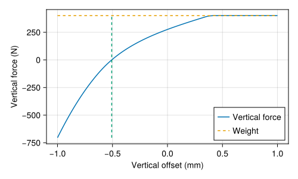

Humanoid LQR
Our second example is a translation of DeepMind's LQR tutorial into Julia. The aim is to balance a humanoid on one leg with a Linear Quadratic Regulator (LQR). Users familiar with MuJoCo's python bindings might find it useful to compare this example to the DeepMind tutorial to see the similarities and differences with MuJoCo.jl.
The humanoid model
Let's start by having a look at the humanoid model shipped with MuJoCo. You can find a copy of the humanoid.xml file here, or locally in the directory given by running example_model_files_directory.
using MuJoCo
model = load_model(joinpath(example_model_files_directory(), "humanoid.xml"))
data = init_data(model)The model comes shipped with three different "keyframes" defining particular starting poses of the humanoid. You can inspect each one by re-setting the model to a specific keyframe with resetkey! and running visualise!.
init_visualiser()
for i in 1:3
resetkey!(model, data, i)
visualise!(model, data)
end 


None of these initial states are stable. In this example, we'll focus on designing a controller for the second keyframe to get the humanoid to stand and balance on one leg.
Computing the control set-point
To design our linear controller, we'll need a set-point $(x^*, u^*)$ about which to stabilise the system. We already have $x^*$, since the desired state is just the starting position of the humanoid in keyframe 2. To find the control inputs required to hold the humanoid in this position, we'll use inverse dynamics via MuJoCo's mj_inverse. If we set all joint accelerations to zero, mj_inverse computes the forces required to hold the model in a given configuration. Let's try it out.
# Reset to desired keyframe
keyframe = 2
resetkey!(model, data, keyframe)
# Propagate derived quantities
mj_forward(model, data)
# Set joint accelerations to 0
data.qacc .= 0
# Inspect forces from inverse dynamics
mj_inverse(model, data)
println("Required control: ", data.qfrc_inverse)Required control: [0.0; 0.0; 275.87856563188643; -33.185534107052504; 4.995479129523576; -6.6877127833396; -4.305208663656604; 3.6932410280963217; -15.45115094768496; -10.906299621526648; 0.4118355495043458; -1.6130054371234666; -9.79255143983272; -2.311829304174266; -0.36610644238969153; -5.912550244552439; -0.4171125971822792; -1.9140822794893984; 5.758907794568595; 2.665187588318959; -0.20206631540442416; -5.754549922711962; 0.9943292302894655; 1.1410924371808318; -1.9874024238883543; 3.8211273959759344; 1.1510540373906002;;]Unfortunately for us, things are not so simple. data.qfrc_inverse stores the calculated forces that are required to achieve the desired joint acceleration. Looking at its output, we see that the third element is a large value. This corresponds to an unphysical vertical force due to the humanoid starting slightly above the ground. The simulator has been forced to introduce this impossible force to meet the requirement that data.qacc == 0.
We can remove this unphysical force by slightly tweaking the starting height of the model. Let's examine how this large force changes when we move the humanoid up/down from its starting position. We will examine the range of heights from $\pm 1$mm. Note that all heights are all measured in metres.
using CairoMakie
using LinearAlgebra
heights = LinRange(-0.001, 0.001, 2001) # -1mm to +1mm
# Map each height to the corresponding high force output
u_vert = map(heights) do h
# Set model in position with qacc == 0
resetkey!(model, data, keyframe)
mj_forward(model, data)
data.qacc .= 0
# Offset the height and check required vertical forces
data.qpos[3] += h
mj_inverse(model, data)
return data.qfrc_inverse[3] # 3 -> z-force
end
# Find height corresponding to minimum fictitious force (best offset)
height = heights[argmin(abs.(u_vert))]
height_mm = height*1000
heights_mm = heights .* 1000
# Compare force to weight of humanoid
weight = sum(model.body_mass) * norm(model.opt.gravity)
fig = Figure(resolution=(500,300))
ax = Axis(fig[1,1], xlabel="Vertical offset (mm)", ylabel="Vertical force (N)")
lines!(ax, heights_mm, u_vert, label="Vertical force")
lines!(ax, heights_mm, weight*ones(length(heights)), linestyle=:dash, label="Weight")
lines!(ax, [height_mm, height_mm], [minimum(u_vert), maximum(u_vert)], linestyle=:dash)
axislegend(ax,position=:rb)┌ Warning: Found `resolution` in the theme when creating a `Scene`. The `resolution` keyword for `Scene`s and `Figure`s has been deprecated. Use `Figure(; size = ...` or `Scene(; size = ...)` instead, which better reflects that this is a unitless size and not a pixel resolution. The key could also come from `set_theme!` calls or related theming functions.
└ @ Makie ~/.julia/packages/Makie/pCA2E/src/scenes.jl:220
As we lift the humanoid upwards, the vertical force increases until it exactly balances the weight of the humanoid. This is the force required to keep the accelerations zero while the model is in the air. Pushing the humanoid down, however, requires an increasingly negative vertical force to explain the fact that its foot is penetrating the floor but data.qacc == 0. At a height of approximately $-0.5\,$mm the humanoid's foot is just resting on the floor and all forces can be accounted for by internal torques only. This is the case we're interested in.
Let's now take our best-choice offset and save the humanoid's position and forces (from inverse dynamics) to define our set point. Our position set-point is just data.qpos after changing the height.
resetkey!(model, data, keyframe)
mj_forward(model, data)
data.qacc .= 0
data.qpos[3] += height
qpos0 = copy(data.qpos)
println(qpos0)[0.0; 0.0; 1.2189729999999999; 0.971587999157264; -0.17997299984389503; 0.13531799988262788; -0.07290759993676141; -0.0516; -0.202; 0.23; -0.24; -0.007; -0.34; -1.76; -0.466; -0.0415; -0.08; -0.01; -0.37; -0.685; -0.35; -0.09; 0.109; -0.067; -0.7; -0.05; 0.12; 0.16;;]We can compute the control set-point by propagating the required forces through the actuator dynamics. For the simple linear motors in our humanoid robot, we can directly use data.actuator_moment as the Jacobian of data.qfrc_inverse with respect to data.ctrl.
mj_inverse(model, data)
qfrc0 = copy(data.qfrc_inverse)
M_act = data.actuator_moment
ctrl0 = pinv(M_act)' * qfrc0
println(ctrl0)[0.3659303817100733; 0.06464056026873236; -0.46600504722592595; -0.2726574905381662; 0.010295888737608646; -0.013441711976028888; -0.122406892997909; -0.018305322119484577; -0.11559146520871331; -0.5938650629992254; -0.054275618510932405; 0.10219803776988585; 0.3262602842970541; -0.005652473252832689; 0.6668428405828315; -0.2877274961355981; 0.04971646151447328; 0.028527310929520794; -0.09937012119441772; 0.19105636979879673; 0.028776350934765008;;]As a sanity check, let's verify that these control inputs actually give us the right forces.
data.ctrl .= ctrl0
mj_forward(model, data)
qfrc_test = data.qfrc_actuator
println("Desired forces: ", qfrc0)
println("Actual forces: ", qfrc_test)
println("Joint forces equal? ", all((qfrc_test .≈ qfrc0)[7:end]))Desired forces: [0.0; 0.0; -0.1908962217077601; -3.447398548082589; 0.22200083297289552; -0.8168220883530886; 2.585622410749294; 14.637215268402931; -18.640201889037037; -10.906299621526648; 0.4118355495043458; -1.6130054371234666; -9.79255143983272; -2.311829304174266; -0.36610644238969153; -23.754602519969016; -2.171024740437296; 12.263764532386302; 26.10082274376433; 13.336856811656629; -0.11304946505665377; -5.754549922711962; 0.9943292302894655; 1.1410924371808318; -1.9874024238883543; 3.8211273959759344; 1.1510540373906002;;]
Actual forces: [0.0; 0.0; 0.0; 0.0; 0.0; 0.0; 2.585622410749294; 14.637215268402933; -18.640201889037037; -10.906299621526648; 0.4118355495043458; -1.6130054371234666; -9.79255143983272; -2.311829304174266; -0.36610644238969153; -23.754602519969016; -2.1710247404372964; 12.263764532386302; 26.10082274376433; 13.33685681165663; -0.11304946505665378; -5.754549922711963; 0.9943292302894656; 1.1410924371808318; -1.9874024238883545; 3.8211273959759344; 1.1510540373906002;;]
Joint forces equal? trueThe actuator forces are approximately equal to the desired forces qfrc0 for all joints in the humanoid. The first six elements correspond to forces on the "root joint" (the free body of the humanoid). There is still a slight mismatch here, but it is minor. Let's also have a look at how the model behaves if we start it exactly at our set point.
reset!(model, data)
data.qpos .= qpos0
data.ctrl .= ctrl0
visualise!(model, data)
The humanoid still falls over because we are trying to stabilise the system at an unstable equilibrium point, and the control set-point ctrl0 is only an approximation. Even if we had found the exact controls to hold the system in qpos0, any slight perturbation would cause the humanoid to fall over. We therefore need a controller.
Designing the LQR cost
See A quick review of LQR if you're in need of a refresher on linear quadratic regulators.
Now that we have our set point to stabilise, we'll need to design the LQR weight matrices $Q,R$ to encourage the system to remain balanced. Let's start by setting R equal to the identity matrix I and defining some useful variables.
nu = model.nu # number of actuators/controls
nv = model.nv # number of degrees of freedom
R = Matrix{Float64}(I, nu, nu)We'll construct the $Q$ matrix in two parts: one component to encourage the humanoid's centre of mass (CoM) to remain above its foot (helps with stability), and another component to keep the joints close to their original configuration qpos0.
CoM balancing cost
Much like the Python bindings, MuJoCo.jl includes a number of useful functions to isolate and work with different parts of a MuJoCo model. Let's extract references for the torso and left foot and have a look at one of them.
import MuJoCo as MJ
torso = MJ.body(model, "torso")
left_foot = MJ.body(model, "foot_left")ModelBody:
id: 10
name: "foot_left"
parentid: (1 x ) Int32 [9]
rootid: (1 x ) Int32 [1]
weldid: (1 x ) Int32 [10]
mocapid: (1 x ) Int32 [-1]
jntnum: (1 x ) Int32 [2]
jntadr: (1 x ) Int32 [14]
dofnum: (1 x ) Int32 [2]
dofadr: (1 x ) Int32 [19]
geomnum: (1 x ) Int32 [2]
geomadr: (1 x ) Int32 [12]
simple: (1 x ) UInt8 [0]
sameframe: (1 x ) UInt8 [0]
pos: (3 x ) Float64 [0.0, 0.0, -0.39] (4 s.f.)
quat: (4 x ) Float64 [1.0, 0.0, 0.0, 0.0] (4 s.f.)
ipos: (3 x ) Float64 [0.035, 0.0, 0.0] (4 s.f.)
iquat: (4 x ) Float64 [0.0, 0.7071, 0.0, 0.7071] (4 s.f.)
mass: (1 x ) Float64 [1.131] (4 s.f.)
subtreemass: (1 x ) Float64 [1.131] (4 s.f.)
inertia: (3 x ) Float64 [0.006446, 0.005944, 0.000903] (4 s.f.)
invweight0: (2 x ) Float64 [0.3657, 48.34] (4 s.f.)
user: nothing
One way to keep the CoM over the left foot is to design $Q$ from the difference between the CoM and left-foot Jacobians. MuJoCo's C API comes with a number of very useful functions for computing Jacobians.
# Get Jacobian for torso CoM
reset!(model, data)
data.qpos .= qpos0
forward!(model, data)
jac_com = mj_zeros(3, nv)
mj_jacSubtreeCom(model, data, jac_com, torso.id)
# Get (left) foot Jacobian for balancing
jac_foot = mj_zeros(3, nv)
mj_jacBodyCom(model, data, jac_foot, nothing, left_foot.id)
# Design Q-matrix to balance CoM over foot
jac_diff = jac_com .- jac_foot
Qbalance = jac_diff' * jac_diff[4.930380657631324e-32 0.0 0.0 -3.445579069922019e-17 1.643500784337036e-16 6.068279684531849e-17 5.95783235048152e-17 1.4884641559545156e-16 -2.615889248082462e-17 1.8448726174112607e-18 -4.19675272449644e-19 -1.2594912963607767e-17 6.743962466892441e-19 -4.265016092358265e-19 3.956516322349703e-20 2.4416066810159566e-17 2.8506203702269366e-18 1.4801381764496802e-16 -8.060974977015129e-17 1.7108492080947968e-17 1.2700948868758095e-18 -6.696119442090515e-19 3.3078500592035365e-18 1.3022159717762595e-19 -6.384933325393986e-19 1.5643617507679348e-18 -1.0971943724341628e-18; 0.0 4.930380657631324e-32 0.0 -1.7026868264106972e-16 -1.6855275442690527e-17 -5.1006340013404486e-17 -5.672925244624978e-17 -1.9676320315043007e-17 -1.5233218175986238e-16 1.1823574006427848e-17 -5.416746242122405e-19 2.47640705045718e-18 -2.0234689214836424e-18 1.8479027549073265e-19 2.8377258402809243e-19 1.4679164737317285e-16 1.2536739852398554e-17 -2.2479389061965583e-17 1.3893036934624758e-17 -2.0541067993702838e-18 1.1030517252671941e-17 1.960313318173584e-18 2.1048330148473917e-18 1.0926750149511411e-18 -2.2505531625316216e-18 -1.4222930571743299e-18 6.972753972057926e-21; 0.0 0.0 4.930380657631324e-32 -1.740532938265168e-18 -8.265421392186522e-19 -7.983078331039028e-19 1.6587358154031066e-18 8.285949303260347e-18 -1.1446642093024697e-17 -4.713932950199101e-18 2.670186302440854e-19 9.902981233405575e-19 -4.451396093616672e-18 2.6831269742696147e-19 -1.3389095381485578e-19 -1.2870466564366534e-17 -1.0696669620797395e-18 7.827037144299542e-18 1.5850258144832562e-17 7.536384440872767e-18 -4.6558998304290855e-21 -3.249401316156393e-18 5.88156431382916e-19 6.323587785736062e-19 -1.073649592667868e-18 2.051052415391444e-18 6.378791949185351e-19; -3.445579069922019e-17 -1.7026868264106972e-16 -1.740532938265168e-18 0.6121566944172416 -0.05661728634672459 0.13376853659664906 0.15421749921584377 -0.03636193419938387 0.5447581101543882 -0.041955100488754046 0.0021545134278504368 0.00021478001431382787 0.006673811944211776 -0.0003495785594754453 -0.0010029203595738243 -0.5235476858711078 -0.04524950348585284 -0.02608359200782531 0.0077952535506278725 -0.005128486145404692 -0.03898087784217263 -0.006187195034468952 -0.00960139738563142 -0.003886837103210353 0.008256304443286863 0.0037461756535838112 0.000720171742021638; 1.643500784337036e-16 -1.6855275442690527e-17 -8.265421392186522e-19 -0.05661728634672459 0.5536232120550898 0.2197316783167593 0.21796528600528053 0.5027547143173894 -0.03492943316467564 0.0021866795788733607 -0.001218248554688296 -0.0428472794740057 0.0030144217826222103 -0.0014893786255588065 3.711963141632722e-5 0.031421647468539975 0.005234354521605053 0.5009452854191183 -0.2737210674981011 0.05760560105160403 0.00046287776926983863 -0.0028477847679029256 0.010297009006599162 4.9933673623171123e-5 -0.0013409779850553508 0.00566651655978729 -0.0036704821687467606; 6.068279684531849e-17 -5.1006340013404486e-17 -7.983078331039028e-19 0.13376853659664906 0.2197316783167593 0.12746857263854625 0.13198994379348727 0.20342078717952905 0.1255815863664994 -0.009884876441425145 3.952245944768159e-5 -0.01807969058233953 0.0029954599628738456 -0.0007204511116886541 -0.00024270722240567804 -0.12160105430170763 -0.009443807843236262 0.2053033245517906 -0.11384336848933337 0.02306003011386587 -0.009848117628120667 -0.002799546734347486 0.0018842406149841943 -0.0009803697307184404 0.001559798864648599 0.003363603135213802 -0.0013679613503201123; 5.95783235048152e-17 -5.672925244624978e-17 1.6587358154031066e-18 0.15421749921584377 0.21796528600528053 0.13198994379348727 0.1373227868071506 0.20278326844078895 0.1432790157866027 -0.01153353677749002 0.00012510516216442417 -0.01803564346384498 0.002993391324911362 -0.000718975016715704 -0.00028320470877726 -0.13982816492846767 -0.011016167512193139 0.20498695205135659 -0.11286033157453512 0.02329077954791684 -0.011157162801290078 -0.003174021953755166 0.001595133501350173 -0.0010786050785834206 0.001781828650709435 0.0035958648788115125 -0.001312403479885596; 1.4884641559545156e-16 -1.9676320315043007e-17 8.285949303260347e-18 -0.03636193419938387 0.5027547143173894 0.20342078717952905 0.20278326844078895 0.45860698276131023 -0.02010325254830729 5.8795408909638675e-5 -0.0010059364015970796 -0.038845452322538075 0.002095413142938974 -0.0013162473149686215 -1.630464751090763e-5 0.012966149376170256 0.003422950899523711 0.4571349328334102 -0.24623862877574687 0.053736238015297186 -0.0005685057569171254 -0.0033499536149936126 0.009245121666156424 6.333967651118814e-5 -0.0012098669302554187 0.005635062862204959 -0.0032079716354851437; -2.615889248082462e-17 -1.5233218175986238e-16 -1.1446642093024697e-17 0.5447581101543882 -0.03492943316467564 0.1255815863664994 0.1432790157866027 -0.02010325254830729 0.48719173099889795 -0.03641528049011016 0.0018342650847155734 -0.0011987533456079239 0.006927487718327034 -0.0004069457695931809 -0.0008666689012223076 -0.4635030667513962 -0.03999841082684019 -0.01089442157009348 -0.0038359529532753026 -0.0044803625774191246 -0.03475337624397067 -0.00494703717405038 -0.008394806493437839 -0.003591901288186604 0.007541479254663587 0.003088227488340582 0.0004124963438539909; 1.8448726174112607e-18 1.1823574006427848e-17 -4.713932950199101e-18 -0.041955100488754046 0.0021866795788733607 -0.009884876441425145 -0.01153353677749002 5.8795408909638675e-5 -0.03641528049011016 0.0033551490768340708 -0.0001711325337829509 2.7903992151544264e-5 -3.4416747342885666e-5 2.7022719271762407e-6 8.23334362048528e-5 0.037346344706616096 0.0032153793440014636 -0.0006006880883088611 -0.0012000376425958831 -0.0005729761675012899 0.0026932047881242887 0.0007557230034161154 0.0005723022804234378 0.00020644793956542775 -0.00046094632695699176 -0.00047864585444501266 -0.00010037076404187206; -4.19675272449644e-19 -5.416746242122405e-19 2.670186302440854e-19 0.0021545134278504368 -0.001218248554688296 3.952245944768159e-5 0.00012510516216442417 -0.0010059364015970796 0.0018342650847155734 -0.0001711325337829509 1.096949138970568e-5 8.536449843770075e-5 -7.617491925874061e-6 3.053323372360146e-6 -4.179561820267369e-6 -0.0018902553523413956 -0.0001677921099894635 -0.0009705388530720751 0.0006193584121692375 -8.22451404429115e-5 -0.0001320227051295605 -3.3435209324868576e-5 -4.809585602317191e-5 -9.688370344533409e-6 2.434584754466238e-5 1.341813879611736e-5 1.2717355022311092e-5; -1.2594912963607767e-17 2.47640705045718e-18 9.902981233405575e-19 0.00021478001431382787 -0.0428472794740057 -0.01807969058233953 -0.01803564346384498 -0.038845452322538075 -0.0011987533456079239 2.7903992151544264e-5 8.536449843770075e-5 0.003361710308451698 -0.0003633209112080574 0.00012362283101896736 1.456777586055964e-6 0.0008772554947334866 -0.00012000155953592717 -0.03878276954250479 0.02160835342879076 -0.0043222525944330605 0.00022948948967266175 0.00020425120397100113 -0.0007274734458603147 3.431788045674895e-5 2.850183693496717e-5 -0.00042986586154321153 0.0002934464208015663; 6.743962466892441e-19 -2.0234689214836424e-18 -4.451396093616672e-18 0.006673811944211776 0.0030144217826222103 0.0029954599628738456 0.002993391324911362 0.002095413142938974 0.006927487718327034 -3.4416747342885666e-5 -7.617491925874061e-6 -0.0003633209112080574 0.0004941639530066147 -3.764241923683875e-5 9.832762453066478e-7 -0.00452846754629561 -0.000378951357929035 0.002240497708407811 -0.0031038337396048043 -0.0003621040520801005 -0.0004349083338325176 0.00020376024013833986 -9.423977760866086e-5 -0.00010015560090120833 0.00018056549979491185 -0.00010540933000814171 -7.288495805116789e-5; -4.265016092358265e-19 1.8479027549073265e-19 2.6831269742696147e-19 -0.0003495785594754453 -0.0014893786255588065 -0.0007204511116886541 -0.000718975016715704 -0.0013162473149686215 -0.0004069457695931809 2.7022719271762407e-6 3.053323372360146e-6 0.00012362283101896736 -3.764241923683875e-5 5.842201489075399e-6 -7.318598895716211e-9 0.0002689217829567295 1.6507208356302534e-5 -0.0013220482350060172 0.0008356415964272906 -0.00011468223490080418 3.033002268161111e-5 -4.54362934293444e-6 -1.7524830678839188e-5 6.410172111410235e-6 -8.754612541494945e-6 -7.70133890712521e-6 1.298874862826273e-5; 3.956516322349703e-20 2.8377258402809243e-19 -1.3389095381485578e-19 -0.0010029203595738243 3.711963141632722e-5 -0.00024270722240567804 -0.00028320470877726 -1.630464751090763e-5 -0.0008666689012223076 8.23334362048528e-5 -4.179561820267369e-6 1.456777586055964e-6 9.832762453066478e-7 -7.318598895716211e-9 2.0286277276689263e-6 0.0008994175679549886 7.734873467333037e-5 -3.185987137512328e-5 -2.7768263597037358e-5 -1.8559471920772025e-5 6.451901991403542e-5 1.9569590635720513e-5 1.3171816753879691e-5 4.676237946656328e-6 -1.0550005109907535e-5 -1.2500676014475744e-5 -2.5725853773742534e-6; 2.4416066810159566e-17 1.4679164737317285e-16 -1.2870466564366534e-17 -0.5235476858711078 0.031421647468539975 -0.12160105430170763 -0.13982816492846767 0.012966149376170256 -0.4635030667513962 0.037346344706616096 -0.0018902553523413956 0.0008772554947334866 -0.00452846754629561 0.0002689217829567295 0.0008994175679549886 0.45249205925026176 0.039016394057228454 0.00432808545733382 -0.002693331083320389 0.0003894137609299909 0.033471217715409424 0.006353051906541123 0.007751262480355133 0.003152622951091956 -0.006736468317018989 -0.003995293570633398 -0.0006891036264413727; 2.8506203702269366e-18 1.2536739852398554e-17 -1.0696669620797395e-18 -0.04524950348585284 0.005234354521605053 -0.009443807843236262 -0.011016167512193139 0.003422950899523711 -0.03999841082684019 0.0032153793440014636 -0.0001677921099894635 -0.00012000155953592717 -0.000378951357929035 1.6507208356302534e-5 7.734873467333037e-5 0.039016394057228454 0.003375805674842106 0.0026720173764868743 -0.001471872203014862 0.00030335572536341164 0.0028783226632484176 0.0005302411253944729 0.0007136981835804874 0.00027165004853863374 -0.0005858828380685956 -0.0003157050269672353 -7.550304093452123e-5; 1.4801381764496802e-16 -2.2479389061965583e-17 7.827037144299542e-18 -0.02608359200782531 0.5009452854191183 0.2053033245517906 0.20498695205135659 0.4571349328334102 -0.01089442157009348 -0.0006006880883088611 -0.0009705388530720751 -0.03878276954250479 0.002240497708407811 -0.0013220482350060172 -3.185987137512328e-5 0.00432808545733382 0.0026720173764868743 0.4558405773823699 -0.24581475686641158 0.053493959940756716 -0.001217028500785866 -0.0034198505647416865 0.009064121180014869 -6.867124799919745e-6 -0.0010611405978486366 0.005670416074440998 -0.0031957769146251053; -8.060974977015129e-17 1.3893036934624758e-17 1.5850258144832562e-17 0.0077952535506278725 -0.2737210674981011 -0.11384336848933337 -0.11286033157453512 -0.24623862877574687 -0.0038359529532753026 -0.0012000376425958831 0.0006193584121692375 0.02160835342879076 -0.0031038337396048043 0.0008356415964272906 -2.7768263597037358e-5 -0.002693331083320389 -0.001471872203014862 -0.24581475686641158 0.14080411632691822 -0.026127706921791588 0.001030175130416239 0.0006025519931285297 -0.004626012214961457 0.00029828313225429594 6.458216060283355e-5 -0.00229907337533048 0.0020008999972768327; 1.7108492080947968e-17 -2.0541067993702838e-18 7.536384440872767e-18 -0.005128486145404692 0.05760560105160403 0.02306003011386587 0.02329077954791684 0.053736238015297186 -0.0044803625774191246 -0.0005729761675012899 -8.22451404429115e-5 -0.0043222525944330605 -0.0003621040520801005 -0.00011468223490080418 -1.8559471920772025e-5 0.0003894137609299909 0.00030335572536341164 0.053493959940756716 -0.026127706921791588 0.007174231992010979 -1.954292970597081e-5 -0.0008107179517656357 0.0011500399594100322 9.632365482590695e-5 -0.00029190885358603856 0.0009156074370259358 -0.0002835148469118395; 1.2700948868758095e-18 1.1030517252671941e-17 -4.6558998304290855e-21 -0.03898087784217263 0.00046287776926983863 -0.009848117628120667 -0.011157162801290078 -0.0005685057569171254 -0.03475337624397067 0.0026932047881242887 -0.0001320227051295605 0.00022948948967266175 -0.0004349083338325176 3.033002268161111e-5 6.451901991403542e-5 0.033471217715409424 0.0028783226632484176 -0.001217028500785866 0.001030175130416239 -1.954292970597081e-5 0.0025005264729355404 0.0004216292716686369 0.0005560613639668962 0.00024775409928402565 -0.0005198526357127204 -0.00027809799468552155 -2.6764622706019293e-5; -6.696119442090515e-19 1.960313318173584e-18 -3.249401316156393e-18 -0.006187195034468952 -0.0028477847679029256 -0.002799546734347486 -0.003174021953755166 -0.0033499536149936126 -0.00494703717405038 0.0007557230034161154 -3.3435209324868576e-5 0.00020425120397100113 0.00020376024013833986 -4.54362934293444e-6 1.9569590635720513e-5 0.006353051906541123 0.0005302411253944729 -0.0034198505647416865 0.0006025519931285297 -0.0008107179517656357 0.0004216292716686369 0.00030119007853258273 -3.802216270725959e-20 -2.3114489545599905e-20 -1.0050505445851552e-5 -0.00021297235412297735 -2.6861257742656362e-5; 3.3078500592035365e-18 2.1048330148473917e-18 5.88156431382916e-19 -0.00960139738563142 0.010297009006599162 0.0018842406149841943 0.001595133501350173 0.009245121666156424 -0.008394806493437839 0.0005723022804234378 -4.809585602317191e-5 -0.0007274734458603147 -9.423977760866086e-5 -1.7524830678839188e-5 1.3171816753879691e-5 0.007751262480355133 0.0007136981835804874 0.009064121180014869 -0.004626012214961457 0.0011500399594100322 0.0005560613639668962 -3.802216270725959e-20 0.00031880138905730776 6.292775470914014e-5 -0.00015172363430819506 6.870310085160846e-5 -6.570497211201096e-5; 1.3022159717762595e-19 1.0926750149511411e-18 6.323587785736062e-19 -0.003886837103210353 4.9933673623171123e-5 -0.0009803697307184404 -0.0010786050785834206 6.333967651118814e-5 -0.003591901288186604 0.00020644793956542775 -9.688370344533409e-6 3.431788045674895e-5 -0.00010015560090120833 6.410172111410235e-6 4.676237946656328e-6 0.003152622951091956 0.00027165004853863374 -6.867124799919745e-6 0.00029828313225429594 9.632365482590695e-5 0.00024775409928402565 -2.3114489545599905e-20 6.292775470914014e-5 3.267037759074219e-5 -6.533370952033488e-5 -1.0828657112765127e-6 5.437897753781058e-6; -6.384933325393986e-19 -2.2505531625316216e-18 -1.073649592667868e-18 0.008256304443286863 -0.0013409779850553508 0.001559798864648599 0.001781828650709435 -0.0012098669302554187 0.007541479254663587 -0.00046094632695699176 2.434584754466238e-5 2.850183693496717e-5 0.00018056549979491185 -8.754612541494945e-6 -1.0550005109907535e-5 -0.006736468317018989 -0.0005858828380685956 -0.0010611405978486366 6.458216060283355e-5 -0.00029190885358603856 -0.0005198526357127204 -1.0050505445851552e-5 -0.00015172363430819506 -6.533370952033488e-5 0.00013437880725617702 -2.4252149879667997e-20 1.227105445630541e-22; 1.5643617507679348e-18 -1.4222930571743299e-18 2.051052415391444e-18 0.0037461756535838112 0.00566651655978729 0.003363603135213802 0.0035958648788115125 0.005635062862204959 0.003088227488340582 -0.00047864585444501266 1.341813879611736e-5 -0.00042986586154321153 -0.00010540933000814171 -7.70133890712521e-6 -1.2500676014475744e-5 -0.003995293570633398 -0.0003157050269672353 0.005670416074440998 -0.00229907337533048 0.0009156074370259358 -0.00027809799468552155 -0.00021297235412297735 6.870310085160846e-5 -1.0828657112765127e-6 -2.4252149879667997e-20 0.0001759896819529493 -8.478098843039077e-6; -1.0971943724341628e-18 6.972753972057926e-21 6.378791949185351e-19 0.000720171742021638 -0.0036704821687467606 -0.0013679613503201123 -0.001312403479885596 -0.0032079716354851437 0.0004124963438539909 -0.00010037076404187206 1.2717355022311092e-5 0.0002934464208015663 -7.288495805116789e-5 1.298874862826273e-5 -2.5725853773742534e-6 -0.0006891036264413727 -7.550304093452123e-5 -0.0031957769146251053 0.0020008999972768327 -0.0002835148469118395 -2.6764622706019293e-5 -2.6861257742656362e-5 -6.570497211201096e-5 5.437897753781058e-6 1.227105445630541e-22 -8.478098843039077e-6 3.267037759074215e-5]Note the use of mj_zeros to initialise the Jacobians, as outlined in Row vs. Column-Major Arrays.
Joint deviation cost
We will also want to add a cost on the joints deviating from the desired position qpos0. However, different parts of the humanoid will need to be treated differently. In particular:
- The "free joints" (i.e: CoM position) should have no cost on them here, since we've already defined
Qbalanceto take care of them. - The joints in the left leg and lower abdomen should be held close to their original values to keep the balancing leg in place
- Other joints, such as flailing limbs, should be allowed to move around more freely to maintain balance if the humanoid is perturbed.
Let's start by finding the array indices relevant to each set of joints. We'll leverage some of the nice features of the Named Access tools.
# Get indices into relevant sets of joints.
free_dofs = 1:6
body_dofs = 7:nv
# Get all the joints using a list comprehension.
# We add one to the raw ID to get the Julia 1-based index of the joint.
abdomen_dofs = [jnt.id+1 for jnt in MJ.joints(model) if occursin("abdomen", jnt.name)]
left_leg_dofs = [jnt.id+1 for jnt in MJ.joints(model) if occursin("left", jnt.name) && any(occursin(part, jnt.name) for part in ("hip", "knee", "ankle"))]
balance_dofs = vcat(abdomen_dofs, left_leg_dofs)
other_dofs = setdiff(body_dofs, balance_dofs)
println("Balance dofs: ", balance_dofs)
println("Other dofs: ", other_dofs)Balance dofs: [2, 3, 4, 11, 12, 13, 14, 15, 16]
Other dofs: [7, 8, 9, 10, 17, 18, 19, 20, 21, 22, 23, 24, 25, 26, 27]We can now use these indices to construct the second part of the $Q$ matrix.
# Cost coefficients
balance_joint_cost = 3 # Joints can move a bit and still balance
other_joint_cost = 0.3 # Other joints can do whatever
# Construct joint Q matrix
Qjoint = Matrix{Float64}(I, nv, nv)
Qjoint[free_dofs, free_dofs] *= 0
Qjoint[balance_dofs, balance_dofs] *= balance_joint_cost
Qjoint[other_dofs, other_dofs] *= other_joint_costPutting this all together with Qbalance, we can construct our final $Q$ matrix defining our LQR cost.
balance_cost = 1000
Qpos = balance_cost*Qbalance + Qjoint
Q = [Qpos zeros(nv,nv); zeros(nv, 2nv)] + (1e-10) * I # Add ϵI for positive definite Q[1.0e-10 0.0 0.0 -3.445579069922019e-14 1.6435007843370358e-13 6.068279684531848e-14 5.957832350481519e-14 1.4884641559545156e-13 -2.615889248082462e-14 1.844872617411261e-15 -4.19675272449644e-16 -1.2594912963607767e-14 6.743962466892441e-16 -4.265016092358265e-16 3.956516322349703e-17 2.4416066810159566e-14 2.8506203702269364e-15 1.48013817644968e-13 -8.060974977015129e-14 1.7108492080947967e-14 1.2700948868758095e-15 -6.696119442090516e-16 3.3078500592035363e-15 1.3022159717762596e-16 -6.384933325393986e-16 1.564361750767935e-15 -1.0971943724341628e-15 0.0 0.0 0.0 0.0 0.0 0.0 0.0 0.0 0.0 0.0 0.0 0.0 0.0 0.0 0.0 0.0 0.0 0.0 0.0 0.0 0.0 0.0 0.0 0.0 0.0 0.0 0.0; 0.0 1.0e-10 0.0 -1.7026868264106973e-13 -1.6855275442690526e-14 -5.1006340013404487e-14 -5.6729252446249776e-14 -1.9676320315043007e-14 -1.5233218175986238e-13 1.1823574006427848e-14 -5.416746242122405e-16 2.47640705045718e-15 -2.023468921483642e-15 1.8479027549073266e-16 2.8377258402809245e-16 1.4679164737317285e-13 1.2536739852398555e-14 -2.2479389061965585e-14 1.3893036934624759e-14 -2.054106799370284e-15 1.1030517252671941e-14 1.9603133181735838e-15 2.1048330148473915e-15 1.092675014951141e-15 -2.2505531625316216e-15 -1.42229305717433e-15 6.972753972057926e-18 0.0 0.0 0.0 0.0 0.0 0.0 0.0 0.0 0.0 0.0 0.0 0.0 0.0 0.0 0.0 0.0 0.0 0.0 0.0 0.0 0.0 0.0 0.0 0.0 0.0 0.0 0.0; 0.0 0.0 1.0e-10 -1.7405329382651678e-15 -8.265421392186522e-16 -7.983078331039028e-16 1.6587358154031065e-15 8.285949303260347e-15 -1.1446642093024696e-14 -4.713932950199101e-15 2.670186302440854e-16 9.902981233405576e-16 -4.451396093616672e-15 2.6831269742696146e-16 -1.3389095381485577e-16 -1.2870466564366534e-14 -1.0696669620797395e-15 7.827037144299541e-15 1.5850258144832563e-14 7.536384440872767e-15 -4.655899830429085e-18 -3.2494013161563932e-15 5.88156431382916e-16 6.323587785736062e-16 -1.073649592667868e-15 2.0510524153914442e-15 6.378791949185351e-16 0.0 0.0 0.0 0.0 0.0 0.0 0.0 0.0 0.0 0.0 0.0 0.0 0.0 0.0 0.0 0.0 0.0 0.0 0.0 0.0 0.0 0.0 0.0 0.0 0.0 0.0 0.0; -3.445579069922019e-14 -1.7026868264106973e-13 -1.7405329382651678e-15 612.1566944173417 -56.61728634672459 133.76853659664906 154.21749921584376 -36.36193419938387 544.7581101543882 -41.95510048875405 2.154513427850437 0.21478001431382787 6.673811944211775 -0.3495785594754453 -1.0029203595738243 -523.5476858711078 -45.24950348585284 -26.08359200782531 7.795253550627873 -5.1284861454046915 -38.980877842172625 -6.187195034468952 -9.60139738563142 -3.886837103210353 8.256304443286863 3.746175653583811 0.7201717420216379 0.0 0.0 0.0 0.0 0.0 0.0 0.0 0.0 0.0 0.0 0.0 0.0 0.0 0.0 0.0 0.0 0.0 0.0 0.0 0.0 0.0 0.0 0.0 0.0 0.0 0.0 0.0; 1.6435007843370358e-13 -1.6855275442690526e-14 -8.265421392186522e-16 -56.61728634672459 553.6232120551898 219.7316783167593 217.96528600528055 502.75471431738936 -34.929433164675636 2.1866795788733606 -1.218248554688296 -42.847279474005695 3.01442178262221 -1.4893786255588066 0.037119631416327216 31.421647468539973 5.234354521605052 500.9452854191183 -273.7210674981011 57.60560105160403 0.46287776926983865 -2.8477847679029256 10.297009006599161 0.049933673623171124 -1.3409779850553507 5.66651655978729 -3.6704821687467604 0.0 0.0 0.0 0.0 0.0 0.0 0.0 0.0 0.0 0.0 0.0 0.0 0.0 0.0 0.0 0.0 0.0 0.0 0.0 0.0 0.0 0.0 0.0 0.0 0.0 0.0 0.0; 6.068279684531848e-14 -5.1006340013404487e-14 -7.983078331039028e-16 133.76853659664906 219.7316783167593 127.46857263864625 131.98994379348727 203.42078717952904 125.58158636649941 -9.884876441425146 0.039522459447681596 -18.07969058233953 2.9954599628738454 -0.7204511116886541 -0.24270722240567805 -121.60105430170763 -9.443807843236263 205.30332455179058 -113.84336848933337 23.06003011386587 -9.848117628120667 -2.799546734347486 1.8842406149841944 -0.9803697307184405 1.5597988646485992 3.3636031352138023 -1.3679613503201122 0.0 0.0 0.0 0.0 0.0 0.0 0.0 0.0 0.0 0.0 0.0 0.0 0.0 0.0 0.0 0.0 0.0 0.0 0.0 0.0 0.0 0.0 0.0 0.0 0.0 0.0 0.0; 5.957832350481519e-14 -5.6729252446249776e-14 1.6587358154031065e-15 154.21749921584376 217.96528600528055 131.98994379348727 137.6227868072506 202.78326844078896 143.2790157866027 -11.53353677749002 0.12510516216442416 -18.03564346384498 2.9933913249113617 -0.718975016715704 -0.28320470877726 -139.82816492846766 -11.016167512193139 204.98695205135658 -112.86033157453512 23.29077954791684 -11.157162801290077 -3.174021953755166 1.595133501350173 -1.0786050785834207 1.781828650709435 3.5958648788115126 -1.3124034798855961 0.0 0.0 0.0 0.0 0.0 0.0 0.0 0.0 0.0 0.0 0.0 0.0 0.0 0.0 0.0 0.0 0.0 0.0 0.0 0.0 0.0 0.0 0.0 0.0 0.0 0.0 0.0; 1.4884641559545156e-13 -1.9676320315043007e-14 8.285949303260347e-15 -36.36193419938387 502.75471431738936 203.42078717952904 202.78326844078896 458.90698276141023 -20.10325254830729 0.05879540890963868 -1.0059364015970795 -38.84545232253807 2.095413142938974 -1.3162473149686216 -0.01630464751090763 12.966149376170256 3.422950899523711 457.13493283341023 -246.23862877574686 53.73623801529718 -0.5685057569171255 -3.3499536149936127 9.245121666156424 0.06333967651118814 -1.2098669302554186 5.635062862204959 -3.2079716354851437 0.0 0.0 0.0 0.0 0.0 0.0 0.0 0.0 0.0 0.0 0.0 0.0 0.0 0.0 0.0 0.0 0.0 0.0 0.0 0.0 0.0 0.0 0.0 0.0 0.0 0.0 0.0; -2.615889248082462e-14 -1.5233218175986238e-13 -1.1446642093024696e-14 544.7581101543882 -34.929433164675636 125.58158636649941 143.2790157866027 -20.10325254830729 487.491730998998 -36.41528049011016 1.8342650847155735 -1.1987533456079238 6.927487718327034 -0.40694576959318085 -0.8666689012223077 -463.5030667513962 -39.99841082684019 -10.894421570093481 -3.8359529532753025 -4.4803625774191245 -34.75337624397067 -4.947037174050379 -8.394806493437839 -3.591901288186604 7.541479254663587 3.088227488340582 0.4124963438539909 0.0 0.0 0.0 0.0 0.0 0.0 0.0 0.0 0.0 0.0 0.0 0.0 0.0 0.0 0.0 0.0 0.0 0.0 0.0 0.0 0.0 0.0 0.0 0.0 0.0 0.0 0.0; 1.844872617411261e-15 1.1823574006427848e-14 -4.713932950199101e-15 -41.95510048875405 2.1866795788733606 -9.884876441425146 -11.53353677749002 0.05879540890963868 -36.41528049011016 3.6551490769340704 -0.1711325337829509 0.027903992151544266 -0.03441674734288567 0.0027022719271762407 0.0823334362048528 37.346344706616094 3.2153793440014637 -0.6006880883088611 -1.2000376425958832 -0.5729761675012899 2.6932047881242887 0.7557230034161154 0.5723022804234379 0.20644793956542776 -0.4609463269569918 -0.4786458544450127 -0.10037076404187206 0.0 0.0 0.0 0.0 0.0 0.0 0.0 0.0 0.0 0.0 0.0 0.0 0.0 0.0 0.0 0.0 0.0 0.0 0.0 0.0 0.0 0.0 0.0 0.0 0.0 0.0 0.0; -4.19675272449644e-16 -5.416746242122405e-16 2.670186302440854e-16 2.154513427850437 -1.218248554688296 0.039522459447681596 0.12510516216442416 -1.0059364015970795 1.8342650847155735 -0.1711325337829509 3.0109694914897056 0.08536449843770075 -0.00761749192587406 0.003053323372360146 -0.004179561820267369 -1.8902553523413956 -0.1677921099894635 -0.9705388530720751 0.6193584121692375 -0.08224514044291151 -0.13202270512956052 -0.03343520932486858 -0.04809585602317191 -0.009688370344533409 0.02434584754466238 0.013418138796117359 0.012717355022311092 0.0 0.0 0.0 0.0 0.0 0.0 0.0 0.0 0.0 0.0 0.0 0.0 0.0 0.0 0.0 0.0 0.0 0.0 0.0 0.0 0.0 0.0 0.0 0.0 0.0 0.0 0.0; -1.2594912963607767e-14 2.47640705045718e-15 9.902981233405576e-16 0.21478001431382787 -42.847279474005695 -18.07969058233953 -18.03564346384498 -38.84545232253807 -1.1987533456079238 0.027903992151544266 0.08536449843770075 6.361710308551698 -0.3633209112080574 0.12362283101896736 0.001456777586055964 0.8772554947334865 -0.12000155953592717 -38.782769542504795 21.60835342879076 -4.322252594433061 0.22948948967266175 0.20425120397100113 -0.7274734458603147 0.034317880456748946 0.02850183693496717 -0.42986586154321155 0.2934464208015663 0.0 0.0 0.0 0.0 0.0 0.0 0.0 0.0 0.0 0.0 0.0 0.0 0.0 0.0 0.0 0.0 0.0 0.0 0.0 0.0 0.0 0.0 0.0 0.0 0.0 0.0 0.0; 6.743962466892441e-16 -2.023468921483642e-15 -4.451396093616672e-15 6.673811944211775 3.01442178262221 2.9954599628738454 2.9933913249113617 2.095413142938974 6.927487718327034 -0.03441674734288567 -0.00761749192587406 -0.3633209112080574 3.494163953106615 -0.037642419236838746 0.0009832762453066478 -4.52846754629561 -0.37895135792903495 2.240497708407811 -3.1038337396048044 -0.3621040520801005 -0.4349083338325176 0.20376024013833988 -0.09423977760866085 -0.10015560090120833 0.18056549979491185 -0.1054093300081417 -0.07288495805116789 0.0 0.0 0.0 0.0 0.0 0.0 0.0 0.0 0.0 0.0 0.0 0.0 0.0 0.0 0.0 0.0 0.0 0.0 0.0 0.0 0.0 0.0 0.0 0.0 0.0 0.0 0.0; -4.265016092358265e-16 1.8479027549073266e-16 2.6831269742696146e-16 -0.3495785594754453 -1.4893786255588066 -0.7204511116886541 -0.718975016715704 -1.3162473149686216 -0.40694576959318085 0.0027022719271762407 0.003053323372360146 0.12362283101896736 -0.037642419236838746 3.0058422015890756 -7.318598895716211e-6 0.26892178295672947 0.016507208356302535 -1.3220482350060172 0.8356415964272906 -0.11468223490080418 0.03033002268161111 -0.00454362934293444 -0.017524830678839188 0.006410172111410236 -0.008754612541494945 -0.007701338907125209 0.012988748628262731 0.0 0.0 0.0 0.0 0.0 0.0 0.0 0.0 0.0 0.0 0.0 0.0 0.0 0.0 0.0 0.0 0.0 0.0 0.0 0.0 0.0 0.0 0.0 0.0 0.0 0.0 0.0; 3.956516322349703e-17 2.8377258402809245e-16 -1.3389095381485577e-16 -1.0029203595738243 0.037119631416327216 -0.24270722240567805 -0.28320470877726 -0.01630464751090763 -0.8666689012223077 0.0823334362048528 -0.004179561820267369 0.001456777586055964 0.0009832762453066478 -7.318598895716211e-6 3.002028627827669 0.8994175679549886 0.07734873467333037 -0.031859871375123285 -0.02776826359703736 -0.018559471920772026 0.06451901991403543 0.019569590635720512 0.01317181675387969 0.004676237946656328 -0.010550005109907536 -0.012500676014475744 -0.0025725853773742534 0.0 0.0 0.0 0.0 0.0 0.0 0.0 0.0 0.0 0.0 0.0 0.0 0.0 0.0 0.0 0.0 0.0 0.0 0.0 0.0 0.0 0.0 0.0 0.0 0.0 0.0 0.0; 2.4416066810159566e-14 1.4679164737317285e-13 -1.2870466564366534e-14 -523.5476858711078 31.421647468539973 -121.60105430170763 -139.82816492846766 12.966149376170256 -463.5030667513962 37.346344706616094 -1.8902553523413956 0.8772554947334865 -4.52846754629561 0.26892178295672947 0.8994175679549886 455.49205925036176 39.01639405722845 4.328085457333819 -2.693331083320389 0.3894137609299909 33.47121771540942 6.353051906541123 7.751262480355133 3.152622951091956 -6.736468317018989 -3.9952935706333976 -0.6891036264413727 0.0 0.0 0.0 0.0 0.0 0.0 0.0 0.0 0.0 0.0 0.0 0.0 0.0 0.0 0.0 0.0 0.0 0.0 0.0 0.0 0.0 0.0 0.0 0.0 0.0 0.0 0.0; 2.8506203702269364e-15 1.2536739852398555e-14 -1.0696669620797395e-15 -45.24950348585284 5.234354521605052 -9.443807843236263 -11.016167512193139 3.422950899523711 -39.99841082684019 3.2153793440014637 -0.1677921099894635 -0.12000155953592717 -0.37895135792903495 0.016507208356302535 0.07734873467333037 39.01639405722845 3.675805674942106 2.6720173764868744 -1.471872203014862 0.30335572536341165 2.8783226632484173 0.5302411253944729 0.7136981835804874 0.2716500485386337 -0.5858828380685955 -0.3157050269672353 -0.07550304093452123 0.0 0.0 0.0 0.0 0.0 0.0 0.0 0.0 0.0 0.0 0.0 0.0 0.0 0.0 0.0 0.0 0.0 0.0 0.0 0.0 0.0 0.0 0.0 0.0 0.0 0.0 0.0; 1.48013817644968e-13 -2.2479389061965585e-14 7.827037144299541e-15 -26.08359200782531 500.9452854191183 205.30332455179058 204.98695205135658 457.13493283341023 -10.894421570093481 -0.6006880883088611 -0.9705388530720751 -38.782769542504795 2.240497708407811 -1.3220482350060172 -0.031859871375123285 4.328085457333819 2.6720173764868744 456.14057738246987 -245.81475686641159 53.49395994075672 -1.217028500785866 -3.4198505647416866 9.064121180014869 -0.0068671247999197455 -1.0611405978486366 5.670416074440998 -3.1957769146251054 0.0 0.0 0.0 0.0 0.0 0.0 0.0 0.0 0.0 0.0 0.0 0.0 0.0 0.0 0.0 0.0 0.0 0.0 0.0 0.0 0.0 0.0 0.0 0.0 0.0 0.0 0.0; -8.060974977015129e-14 1.3893036934624759e-14 1.5850258144832563e-14 7.795253550627873 -273.7210674981011 -113.84336848933337 -112.86033157453512 -246.23862877574686 -3.8359529532753025 -1.2000376425958832 0.6193584121692375 21.60835342879076 -3.1038337396048044 0.8356415964272906 -0.02776826359703736 -2.693331083320389 -1.471872203014862 -245.81475686641159 141.10411632701823 -26.12770692179159 1.030175130416239 0.6025519931285297 -4.626012214961457 0.2982831322542959 0.06458216060283355 -2.29907337533048 2.0008999972768327 0.0 0.0 0.0 0.0 0.0 0.0 0.0 0.0 0.0 0.0 0.0 0.0 0.0 0.0 0.0 0.0 0.0 0.0 0.0 0.0 0.0 0.0 0.0 0.0 0.0 0.0 0.0; 1.7108492080947967e-14 -2.054106799370284e-15 7.536384440872767e-15 -5.1284861454046915 57.60560105160403 23.06003011386587 23.29077954791684 53.73623801529718 -4.4803625774191245 -0.5729761675012899 -0.08224514044291151 -4.322252594433061 -0.3621040520801005 -0.11468223490080418 -0.018559471920772026 0.3894137609299909 0.30335572536341165 53.49395994075672 -26.12770692179159 7.474231992110979 -0.01954292970597081 -0.8107179517656357 1.1500399594100321 0.09632365482590695 -0.2919088535860386 0.9156074370259357 -0.2835148469118395 0.0 0.0 0.0 0.0 0.0 0.0 0.0 0.0 0.0 0.0 0.0 0.0 0.0 0.0 0.0 0.0 0.0 0.0 0.0 0.0 0.0 0.0 0.0 0.0 0.0 0.0 0.0; 1.2700948868758095e-15 1.1030517252671941e-14 -4.655899830429085e-18 -38.980877842172625 0.46287776926983865 -9.848117628120667 -11.157162801290077 -0.5685057569171255 -34.75337624397067 2.6932047881242887 -0.13202270512956052 0.22948948967266175 -0.4349083338325176 0.03033002268161111 0.06451901991403543 33.47121771540942 2.8783226632484173 -1.217028500785866 1.030175130416239 -0.01954292970597081 2.80052647303554 0.4216292716686369 0.5560613639668962 0.24775409928402564 -0.5198526357127204 -0.27809799468552154 -0.026764622706019293 0.0 0.0 0.0 0.0 0.0 0.0 0.0 0.0 0.0 0.0 0.0 0.0 0.0 0.0 0.0 0.0 0.0 0.0 0.0 0.0 0.0 0.0 0.0 0.0 0.0 0.0 0.0; -6.696119442090516e-16 1.9603133181735838e-15 -3.2494013161563932e-15 -6.187195034468952 -2.8477847679029256 -2.799546734347486 -3.174021953755166 -3.3499536149936127 -4.947037174050379 0.7557230034161154 -0.03343520932486858 0.20425120397100113 0.20376024013833988 -0.00454362934293444 0.019569590635720512 6.353051906541123 0.5302411253944729 -3.4198505647416866 0.6025519931285297 -0.8107179517656357 0.4216292716686369 0.6011900786325828 -3.802216270725959e-17 -2.3114489545599904e-17 -0.010050505445851551 -0.21297235412297735 -0.026861257742656363 0.0 0.0 0.0 0.0 0.0 0.0 0.0 0.0 0.0 0.0 0.0 0.0 0.0 0.0 0.0 0.0 0.0 0.0 0.0 0.0 0.0 0.0 0.0 0.0 0.0 0.0 0.0; 3.3078500592035363e-15 2.1048330148473915e-15 5.88156431382916e-16 -9.60139738563142 10.297009006599161 1.8842406149841944 1.595133501350173 9.245121666156424 -8.394806493437839 0.5723022804234379 -0.04809585602317191 -0.7274734458603147 -0.09423977760866085 -0.017524830678839188 0.01317181675387969 7.751262480355133 0.7136981835804874 9.064121180014869 -4.626012214961457 1.1500399594100321 0.5560613639668962 -3.802216270725959e-17 0.6188013891573078 0.06292775470914014 -0.15172363430819508 0.06870310085160845 -0.06570497211201096 0.0 0.0 0.0 0.0 0.0 0.0 0.0 0.0 0.0 0.0 0.0 0.0 0.0 0.0 0.0 0.0 0.0 0.0 0.0 0.0 0.0 0.0 0.0 0.0 0.0 0.0 0.0; 1.3022159717762596e-16 1.092675014951141e-15 6.323587785736062e-16 -3.886837103210353 0.049933673623171124 -0.9803697307184405 -1.0786050785834207 0.06333967651118814 -3.591901288186604 0.20644793956542776 -0.009688370344533409 0.034317880456748946 -0.10015560090120833 0.006410172111410236 0.004676237946656328 3.152622951091956 0.2716500485386337 -0.0068671247999197455 0.2982831322542959 0.09632365482590695 0.24775409928402564 -2.3114489545599904e-17 0.06292775470914014 0.3326703776907422 -0.06533370952033488 -0.0010828657112765126 0.005437897753781058 0.0 0.0 0.0 0.0 0.0 0.0 0.0 0.0 0.0 0.0 0.0 0.0 0.0 0.0 0.0 0.0 0.0 0.0 0.0 0.0 0.0 0.0 0.0 0.0 0.0 0.0 0.0; -6.384933325393986e-16 -2.2505531625316216e-15 -1.073649592667868e-15 8.256304443286863 -1.3409779850553507 1.5597988646485992 1.781828650709435 -1.2098669302554186 7.541479254663587 -0.4609463269569918 0.02434584754466238 0.02850183693496717 0.18056549979491185 -0.008754612541494945 -0.010550005109907536 -6.736468317018989 -0.5858828380685955 -1.0611405978486366 0.06458216060283355 -0.2919088535860386 -0.5198526357127204 -0.010050505445851551 -0.15172363430819508 -0.06533370952033488 0.434378807356177 -2.4252149879667996e-17 1.227105445630541e-19 0.0 0.0 0.0 0.0 0.0 0.0 0.0 0.0 0.0 0.0 0.0 0.0 0.0 0.0 0.0 0.0 0.0 0.0 0.0 0.0 0.0 0.0 0.0 0.0 0.0 0.0 0.0; 1.564361750767935e-15 -1.42229305717433e-15 2.0510524153914442e-15 3.746175653583811 5.66651655978729 3.3636031352138023 3.5958648788115126 5.635062862204959 3.088227488340582 -0.4786458544450127 0.013418138796117359 -0.42986586154321155 -0.1054093300081417 -0.007701338907125209 -0.012500676014475744 -3.9952935706333976 -0.3157050269672353 5.670416074440998 -2.29907337533048 0.9156074370259357 -0.27809799468552154 -0.21297235412297735 0.06870310085160845 -0.0010828657112765126 -2.4252149879667996e-17 0.47598968205294934 -0.008478098843039078 0.0 0.0 0.0 0.0 0.0 0.0 0.0 0.0 0.0 0.0 0.0 0.0 0.0 0.0 0.0 0.0 0.0 0.0 0.0 0.0 0.0 0.0 0.0 0.0 0.0 0.0 0.0; -1.0971943724341628e-15 6.972753972057926e-18 6.378791949185351e-16 0.7201717420216379 -3.6704821687467604 -1.3679613503201122 -1.3124034798855961 -3.2079716354851437 0.4124963438539909 -0.10037076404187206 0.012717355022311092 0.2934464208015663 -0.07288495805116789 0.012988748628262731 -0.0025725853773742534 -0.6891036264413727 -0.07550304093452123 -3.1957769146251054 2.0008999972768327 -0.2835148469118395 -0.026764622706019293 -0.026861257742656363 -0.06570497211201096 0.005437897753781058 1.227105445630541e-19 -0.008478098843039078 0.33267037769074215 0.0 0.0 0.0 0.0 0.0 0.0 0.0 0.0 0.0 0.0 0.0 0.0 0.0 0.0 0.0 0.0 0.0 0.0 0.0 0.0 0.0 0.0 0.0 0.0 0.0 0.0 0.0; 0.0 0.0 0.0 0.0 0.0 0.0 0.0 0.0 0.0 0.0 0.0 0.0 0.0 0.0 0.0 0.0 0.0 0.0 0.0 0.0 0.0 0.0 0.0 0.0 0.0 0.0 0.0 1.0e-10 0.0 0.0 0.0 0.0 0.0 0.0 0.0 0.0 0.0 0.0 0.0 0.0 0.0 0.0 0.0 0.0 0.0 0.0 0.0 0.0 0.0 0.0 0.0 0.0 0.0 0.0; 0.0 0.0 0.0 0.0 0.0 0.0 0.0 0.0 0.0 0.0 0.0 0.0 0.0 0.0 0.0 0.0 0.0 0.0 0.0 0.0 0.0 0.0 0.0 0.0 0.0 0.0 0.0 0.0 1.0e-10 0.0 0.0 0.0 0.0 0.0 0.0 0.0 0.0 0.0 0.0 0.0 0.0 0.0 0.0 0.0 0.0 0.0 0.0 0.0 0.0 0.0 0.0 0.0 0.0 0.0; 0.0 0.0 0.0 0.0 0.0 0.0 0.0 0.0 0.0 0.0 0.0 0.0 0.0 0.0 0.0 0.0 0.0 0.0 0.0 0.0 0.0 0.0 0.0 0.0 0.0 0.0 0.0 0.0 0.0 1.0e-10 0.0 0.0 0.0 0.0 0.0 0.0 0.0 0.0 0.0 0.0 0.0 0.0 0.0 0.0 0.0 0.0 0.0 0.0 0.0 0.0 0.0 0.0 0.0 0.0; 0.0 0.0 0.0 0.0 0.0 0.0 0.0 0.0 0.0 0.0 0.0 0.0 0.0 0.0 0.0 0.0 0.0 0.0 0.0 0.0 0.0 0.0 0.0 0.0 0.0 0.0 0.0 0.0 0.0 0.0 1.0e-10 0.0 0.0 0.0 0.0 0.0 0.0 0.0 0.0 0.0 0.0 0.0 0.0 0.0 0.0 0.0 0.0 0.0 0.0 0.0 0.0 0.0 0.0 0.0; 0.0 0.0 0.0 0.0 0.0 0.0 0.0 0.0 0.0 0.0 0.0 0.0 0.0 0.0 0.0 0.0 0.0 0.0 0.0 0.0 0.0 0.0 0.0 0.0 0.0 0.0 0.0 0.0 0.0 0.0 0.0 1.0e-10 0.0 0.0 0.0 0.0 0.0 0.0 0.0 0.0 0.0 0.0 0.0 0.0 0.0 0.0 0.0 0.0 0.0 0.0 0.0 0.0 0.0 0.0; 0.0 0.0 0.0 0.0 0.0 0.0 0.0 0.0 0.0 0.0 0.0 0.0 0.0 0.0 0.0 0.0 0.0 0.0 0.0 0.0 0.0 0.0 0.0 0.0 0.0 0.0 0.0 0.0 0.0 0.0 0.0 0.0 1.0e-10 0.0 0.0 0.0 0.0 0.0 0.0 0.0 0.0 0.0 0.0 0.0 0.0 0.0 0.0 0.0 0.0 0.0 0.0 0.0 0.0 0.0; 0.0 0.0 0.0 0.0 0.0 0.0 0.0 0.0 0.0 0.0 0.0 0.0 0.0 0.0 0.0 0.0 0.0 0.0 0.0 0.0 0.0 0.0 0.0 0.0 0.0 0.0 0.0 0.0 0.0 0.0 0.0 0.0 0.0 1.0e-10 0.0 0.0 0.0 0.0 0.0 0.0 0.0 0.0 0.0 0.0 0.0 0.0 0.0 0.0 0.0 0.0 0.0 0.0 0.0 0.0; 0.0 0.0 0.0 0.0 0.0 0.0 0.0 0.0 0.0 0.0 0.0 0.0 0.0 0.0 0.0 0.0 0.0 0.0 0.0 0.0 0.0 0.0 0.0 0.0 0.0 0.0 0.0 0.0 0.0 0.0 0.0 0.0 0.0 0.0 1.0e-10 0.0 0.0 0.0 0.0 0.0 0.0 0.0 0.0 0.0 0.0 0.0 0.0 0.0 0.0 0.0 0.0 0.0 0.0 0.0; 0.0 0.0 0.0 0.0 0.0 0.0 0.0 0.0 0.0 0.0 0.0 0.0 0.0 0.0 0.0 0.0 0.0 0.0 0.0 0.0 0.0 0.0 0.0 0.0 0.0 0.0 0.0 0.0 0.0 0.0 0.0 0.0 0.0 0.0 0.0 1.0e-10 0.0 0.0 0.0 0.0 0.0 0.0 0.0 0.0 0.0 0.0 0.0 0.0 0.0 0.0 0.0 0.0 0.0 0.0; 0.0 0.0 0.0 0.0 0.0 0.0 0.0 0.0 0.0 0.0 0.0 0.0 0.0 0.0 0.0 0.0 0.0 0.0 0.0 0.0 0.0 0.0 0.0 0.0 0.0 0.0 0.0 0.0 0.0 0.0 0.0 0.0 0.0 0.0 0.0 0.0 1.0e-10 0.0 0.0 0.0 0.0 0.0 0.0 0.0 0.0 0.0 0.0 0.0 0.0 0.0 0.0 0.0 0.0 0.0; 0.0 0.0 0.0 0.0 0.0 0.0 0.0 0.0 0.0 0.0 0.0 0.0 0.0 0.0 0.0 0.0 0.0 0.0 0.0 0.0 0.0 0.0 0.0 0.0 0.0 0.0 0.0 0.0 0.0 0.0 0.0 0.0 0.0 0.0 0.0 0.0 0.0 1.0e-10 0.0 0.0 0.0 0.0 0.0 0.0 0.0 0.0 0.0 0.0 0.0 0.0 0.0 0.0 0.0 0.0; 0.0 0.0 0.0 0.0 0.0 0.0 0.0 0.0 0.0 0.0 0.0 0.0 0.0 0.0 0.0 0.0 0.0 0.0 0.0 0.0 0.0 0.0 0.0 0.0 0.0 0.0 0.0 0.0 0.0 0.0 0.0 0.0 0.0 0.0 0.0 0.0 0.0 0.0 1.0e-10 0.0 0.0 0.0 0.0 0.0 0.0 0.0 0.0 0.0 0.0 0.0 0.0 0.0 0.0 0.0; 0.0 0.0 0.0 0.0 0.0 0.0 0.0 0.0 0.0 0.0 0.0 0.0 0.0 0.0 0.0 0.0 0.0 0.0 0.0 0.0 0.0 0.0 0.0 0.0 0.0 0.0 0.0 0.0 0.0 0.0 0.0 0.0 0.0 0.0 0.0 0.0 0.0 0.0 0.0 1.0e-10 0.0 0.0 0.0 0.0 0.0 0.0 0.0 0.0 0.0 0.0 0.0 0.0 0.0 0.0; 0.0 0.0 0.0 0.0 0.0 0.0 0.0 0.0 0.0 0.0 0.0 0.0 0.0 0.0 0.0 0.0 0.0 0.0 0.0 0.0 0.0 0.0 0.0 0.0 0.0 0.0 0.0 0.0 0.0 0.0 0.0 0.0 0.0 0.0 0.0 0.0 0.0 0.0 0.0 0.0 1.0e-10 0.0 0.0 0.0 0.0 0.0 0.0 0.0 0.0 0.0 0.0 0.0 0.0 0.0; 0.0 0.0 0.0 0.0 0.0 0.0 0.0 0.0 0.0 0.0 0.0 0.0 0.0 0.0 0.0 0.0 0.0 0.0 0.0 0.0 0.0 0.0 0.0 0.0 0.0 0.0 0.0 0.0 0.0 0.0 0.0 0.0 0.0 0.0 0.0 0.0 0.0 0.0 0.0 0.0 0.0 1.0e-10 0.0 0.0 0.0 0.0 0.0 0.0 0.0 0.0 0.0 0.0 0.0 0.0; 0.0 0.0 0.0 0.0 0.0 0.0 0.0 0.0 0.0 0.0 0.0 0.0 0.0 0.0 0.0 0.0 0.0 0.0 0.0 0.0 0.0 0.0 0.0 0.0 0.0 0.0 0.0 0.0 0.0 0.0 0.0 0.0 0.0 0.0 0.0 0.0 0.0 0.0 0.0 0.0 0.0 0.0 1.0e-10 0.0 0.0 0.0 0.0 0.0 0.0 0.0 0.0 0.0 0.0 0.0; 0.0 0.0 0.0 0.0 0.0 0.0 0.0 0.0 0.0 0.0 0.0 0.0 0.0 0.0 0.0 0.0 0.0 0.0 0.0 0.0 0.0 0.0 0.0 0.0 0.0 0.0 0.0 0.0 0.0 0.0 0.0 0.0 0.0 0.0 0.0 0.0 0.0 0.0 0.0 0.0 0.0 0.0 0.0 1.0e-10 0.0 0.0 0.0 0.0 0.0 0.0 0.0 0.0 0.0 0.0; 0.0 0.0 0.0 0.0 0.0 0.0 0.0 0.0 0.0 0.0 0.0 0.0 0.0 0.0 0.0 0.0 0.0 0.0 0.0 0.0 0.0 0.0 0.0 0.0 0.0 0.0 0.0 0.0 0.0 0.0 0.0 0.0 0.0 0.0 0.0 0.0 0.0 0.0 0.0 0.0 0.0 0.0 0.0 0.0 1.0e-10 0.0 0.0 0.0 0.0 0.0 0.0 0.0 0.0 0.0; 0.0 0.0 0.0 0.0 0.0 0.0 0.0 0.0 0.0 0.0 0.0 0.0 0.0 0.0 0.0 0.0 0.0 0.0 0.0 0.0 0.0 0.0 0.0 0.0 0.0 0.0 0.0 0.0 0.0 0.0 0.0 0.0 0.0 0.0 0.0 0.0 0.0 0.0 0.0 0.0 0.0 0.0 0.0 0.0 0.0 1.0e-10 0.0 0.0 0.0 0.0 0.0 0.0 0.0 0.0; 0.0 0.0 0.0 0.0 0.0 0.0 0.0 0.0 0.0 0.0 0.0 0.0 0.0 0.0 0.0 0.0 0.0 0.0 0.0 0.0 0.0 0.0 0.0 0.0 0.0 0.0 0.0 0.0 0.0 0.0 0.0 0.0 0.0 0.0 0.0 0.0 0.0 0.0 0.0 0.0 0.0 0.0 0.0 0.0 0.0 0.0 1.0e-10 0.0 0.0 0.0 0.0 0.0 0.0 0.0; 0.0 0.0 0.0 0.0 0.0 0.0 0.0 0.0 0.0 0.0 0.0 0.0 0.0 0.0 0.0 0.0 0.0 0.0 0.0 0.0 0.0 0.0 0.0 0.0 0.0 0.0 0.0 0.0 0.0 0.0 0.0 0.0 0.0 0.0 0.0 0.0 0.0 0.0 0.0 0.0 0.0 0.0 0.0 0.0 0.0 0.0 0.0 1.0e-10 0.0 0.0 0.0 0.0 0.0 0.0; 0.0 0.0 0.0 0.0 0.0 0.0 0.0 0.0 0.0 0.0 0.0 0.0 0.0 0.0 0.0 0.0 0.0 0.0 0.0 0.0 0.0 0.0 0.0 0.0 0.0 0.0 0.0 0.0 0.0 0.0 0.0 0.0 0.0 0.0 0.0 0.0 0.0 0.0 0.0 0.0 0.0 0.0 0.0 0.0 0.0 0.0 0.0 0.0 1.0e-10 0.0 0.0 0.0 0.0 0.0; 0.0 0.0 0.0 0.0 0.0 0.0 0.0 0.0 0.0 0.0 0.0 0.0 0.0 0.0 0.0 0.0 0.0 0.0 0.0 0.0 0.0 0.0 0.0 0.0 0.0 0.0 0.0 0.0 0.0 0.0 0.0 0.0 0.0 0.0 0.0 0.0 0.0 0.0 0.0 0.0 0.0 0.0 0.0 0.0 0.0 0.0 0.0 0.0 0.0 1.0e-10 0.0 0.0 0.0 0.0; 0.0 0.0 0.0 0.0 0.0 0.0 0.0 0.0 0.0 0.0 0.0 0.0 0.0 0.0 0.0 0.0 0.0 0.0 0.0 0.0 0.0 0.0 0.0 0.0 0.0 0.0 0.0 0.0 0.0 0.0 0.0 0.0 0.0 0.0 0.0 0.0 0.0 0.0 0.0 0.0 0.0 0.0 0.0 0.0 0.0 0.0 0.0 0.0 0.0 0.0 1.0e-10 0.0 0.0 0.0; 0.0 0.0 0.0 0.0 0.0 0.0 0.0 0.0 0.0 0.0 0.0 0.0 0.0 0.0 0.0 0.0 0.0 0.0 0.0 0.0 0.0 0.0 0.0 0.0 0.0 0.0 0.0 0.0 0.0 0.0 0.0 0.0 0.0 0.0 0.0 0.0 0.0 0.0 0.0 0.0 0.0 0.0 0.0 0.0 0.0 0.0 0.0 0.0 0.0 0.0 0.0 1.0e-10 0.0 0.0; 0.0 0.0 0.0 0.0 0.0 0.0 0.0 0.0 0.0 0.0 0.0 0.0 0.0 0.0 0.0 0.0 0.0 0.0 0.0 0.0 0.0 0.0 0.0 0.0 0.0 0.0 0.0 0.0 0.0 0.0 0.0 0.0 0.0 0.0 0.0 0.0 0.0 0.0 0.0 0.0 0.0 0.0 0.0 0.0 0.0 0.0 0.0 0.0 0.0 0.0 0.0 0.0 1.0e-10 0.0; 0.0 0.0 0.0 0.0 0.0 0.0 0.0 0.0 0.0 0.0 0.0 0.0 0.0 0.0 0.0 0.0 0.0 0.0 0.0 0.0 0.0 0.0 0.0 0.0 0.0 0.0 0.0 0.0 0.0 0.0 0.0 0.0 0.0 0.0 0.0 0.0 0.0 0.0 0.0 0.0 0.0 0.0 0.0 0.0 0.0 0.0 0.0 0.0 0.0 0.0 0.0 0.0 0.0 1.0e-10]Note that the balance_cost is quite large in comparison to balance_joint_cost because the units for the CoM position (metres) are typically "larger" than the units for joint angles (radians). Eg: if the CoM shifts by $0.1\,$m, the humanoid will most likely fall over, but a $0.1\,$radian change in a leg angle will probably be fine.
Computing optimal control gains
With both cost matrices defined, computing the optimal control gains is simply a matter of linearising the system dynamics about our chosen set-point (qpos0, ctrl0) and solving the LQR Riccati equations. We can follow the same process as our Balancing a Cart-Pole example. Let's start with the linear system Jacobians.
# Initialise the model at our set point
reset!(model, data)
data.ctrl .= ctrl0
data.qpos .= qpos0
# Finite-difference parameters
ϵ = 1e-6
centred = true
# Compute the Jacobians
A = mj_zeros(2nv, 2nv)
B = mj_zeros(2nv, nu)
mjd_transitionFD(model, data, ϵ, centred, A, B, nothing, nothing)
@show A, B([1.0000000000000298 -6.564505341220828e-15 … 5.182408964610541e-7 -1.263651408493347e-6; 3.6422416731934915e-14 1.0000000000000129 … -1.0814097530390606e-6 3.1841984764516794e-7; … ; 1.46150452851046e-10 -2.905661822261152e-11 … 0.9863941042745177 0.005423895014979724; -5.204170427930421e-12 1.214306433183765e-11 … 0.0054217148201529675 0.9816818517215109], [0.00015992280043481045 7.462459699355097e-6 … -5.1824089264728825e-5 0.0002527302843099661; -1.8920385431353732e-5 -6.566536140913056e-5 … 0.00010814097139823714 -6.368396560303588e-5; … ; -0.4997238369523413 -0.9215383985189917 … 1.3605895560213528 -1.084778997023292; -0.052896041404654204 0.5151568750463507 … -0.5421714840908933 3.6636296530468195])Just like the cart-pole example, we'll directly use ared from MatrixEquations.jl to compute the LQR gain matrix $K$ as a lightweight alternative to loading ControlSystemsCore.jl.
using MatrixEquations
S = zeros(2nv, nu)
_, _, K, _ = ared(A,B,R,Q,S)([0.020255004382387806 -0.0087083630941725 … 5.736705251287064e-5 -1.641233278118319e-5; -0.0087083630941725 0.09008169960601956 … 2.794149673841287e-5 -2.6116708015559015e-5; … ; 5.736705251287064e-5 2.794149673841287e-5 … 0.3155587743237286 -0.009967676509137498; -1.641233278118319e-5 -2.6116708015559015e-5 … -0.009967676509137498 0.11841747965025906], ComplexF64[0.4312302150180625 - 0.0im, 0.44714907105790314 - 0.0im, 0.6008161445365976 - 0.06411506913078092im, 0.6008161445365976 + 0.06411506913078092im, 0.6451316922018278 - 0.0im, 0.6552885901559997 - 0.15752042608896158im, 0.6552885901559997 + 0.15752042608896158im, 0.672209227968833 - 0.1683317359778658im, 0.672209227968833 + 0.1683317359778658im, 0.7171920277124391 - 0.0im … 0.98061332895207 + 0.02440560151458567im, 0.9823812630775062 - 0.01017312467700682im, 0.9823812630775062 + 0.01017312467700682im, 0.985296119087309 - 0.00892902716761711im, 0.985296119087309 + 0.00892902716761711im, 0.9922596094302517 - 0.0113211779272434im, 0.9922596094302517 + 0.0113211779272434im, 0.9999122434325208 - 0.0im, 0.9999999947839601 - 0.0im, 0.9999999988971826 - 0.0im], [7.745972866013418e-6 -2.4651195447700225e-6 … -0.00482945871778525 0.001747049139912138; 3.7034730420160145e-6 5.080633524556788e-6 … -0.005981709017640967 0.018629041990100847; … ; -1.000571516529547e-6 -2.739966022957674e-7 … 0.06317370509912823 0.007868318780210215; -4.5360271885841463e-7 -3.605753346527796e-7 … 0.011202191734203842 0.0365565057908543], [-1.7492256883500661e-6 -3.118820305799393e-7 … 0.9920636451594792 -0.12160963858655335; 3.2201662985225563e-6 2.8540592587536625e-6 … 0.12223399394809262 0.9882353384922411; … ; 7.700634208146871e-7 -2.211106660090804e-6 … 0.00016872654698533396 0.0001874117384834291; -6.41547912410394e-7 3.2512550733498717e-6 … 0.00037713153944910025 -6.433027974218214e-5])Testing the controller
We are now ready to test our controller. First, we'll write a function to set the control gains on our humanoid at each simulation time-step. Note the use of mj_differentiatePos to compute the position error, which uses a finite difference to calculate the difference between two positions rather than subtracting qpos0 - data.qpos. This is necessary because orientations of free bodies in MuJoCo are represented by 4-element quaternions, but we are interested in differences between points in 3D space. This is why model.nq >= model.nv for all MuJoCo models.
function humanoid_ctrl!(m::Model, d::Data)
Δq = zeros(m.nv)
mj_differentiatePos(m, Δq, 1, qpos0, d.qpos)
Δx = vcat(Δq, data.qvel)
data.ctrl .= ctrl0 .- K*Δx
nothing
endThis function captures non-const global variables and will take a performance hit (see Performance Tips) for more details. To remedy the performance hit, one can use functors instead, as described below.
Let's run the visualiser and test our controller by manually perturbing the humanoid. You can do this by double-clicking on a body to select it, then CTRL+RightClick and drag to apply a force.
reset!(model, data)
data.qpos .= qpos0
visualise!(model, data, controller=humanoid_ctrl!)
For small perturbations, our controller works just great! If you apply a large perturbation, you'll find that it's easy to de-stabilise the system and get the humanoid to fall over. This is to be expected from a simple LQR, but feel free to play around with the weight matrices to see if you can improve the robustness. In general, designing robust controllers for nonlinear systems is a difficult challenge and an open area of research in the control community.
Improve performance with functors and cached memory
A functor in Julia can be created by defining a struct to hold any variables that may be needed by a function, and defining the function itself when the struct is called. The struct will store all the variables that are used within the function that are not accessible from the input arguments. Our humanoid controller requires qpos0, ctrl0 and K. We also can reuse some memory in the form of Δq and Δx, so we can store this too inside the functor. Finally, we can store a matrix which holds the output of the K*Δx matrix multiplication.
struct LQRHumanoidBalance{TQ,TC,TK,TDQ,TDX,TKDX}
qpos0::TQ
ctrl0::TC
K::TK
Δq::TDQ
Δx::TDX
KΔx::TKDX
endNotice that we are not restricting the types of the fields for clarity, however, the true type will be stored in the functors type information.
Next, we must define the actual function body for the functor, which follows the same format as the previous controller:
function (functor::LQRHumanoidBalance)(model::Model, data::Data)
Δq = functor.Δq
mj_differentiatePos(model, Δq, 1, functor.qpos0, data.qpos)
Δx = functor.Δx
Δx[1:length(Δq)] .= Δq
Δx[(length(Δq)+1):end] .= data.qvel
KΔx = functor.KΔx
mul!(KΔx, functor.K, Δx)
data.ctrl .= functor.ctrl0 .- KΔx
nothing
endWe can now create an instance of the functor, creating memory for the caches as well:
controller = LQRHumanoidBalance(
qpos0,
ctrl0,
K,
zeros(eltype(qpos0), model.nv), # Δq
zeros(eltype(qpos0), 2 * model.nv), # Δx
similar(ctrl0) # KΔx
);Now we can benchmark these two functions with BenchmarkTools.jl:
using BenchmarkTools
@benchmark humanoid_ctrl!(model, data)BenchmarkTools.Trial: 10000 samples with 10 evaluations.
Range (min … max): 1.699 μs … 269.534 μs ┊ GC (min … max): 0.00% … 98.16%
Time (median): 1.747 μs ┊ GC (median): 0.00%
Time (mean ± σ): 1.967 μs ± 3.789 μs ┊ GC (mean ± σ): 2.69% ± 1.39%
▅██▆▄▂ ▃▃▂ ▂▄▅▄▃ ▁▂▄▄▄▃▁ ▁▂▂▃▂▁ ▂
███████▇▄▃▇████▆▁▅▇▇██████▇▇██████████████████▇▆▇██▇█▇▆▅▄▅▅ █
1.7 μs Histogram: log(frequency) by time 2.69 μs <
Memory estimate: 1.25 KiB, allocs estimate: 11.@benchmark controller(model, data)BenchmarkTools.Trial: 10000 samples with 99 evaluations.
Range (min … max): 790.879 ns … 1.303 μs ┊ GC (min … max): 0.00% … 0.00%
Time (median): 794.727 ns ┊ GC (median): 0.00%
Time (mean ± σ): 808.159 ns ± 49.161 ns ┊ GC (mean ± σ): 0.00% ± 0.00%
█▃▆▃ ▁▁ ▁
██████▆▇▆▅▄▅▅▄▅████▇▆▇██▆▄▃▃▃▄▅▅▅▅▄▅▁▄▄▃▃▃▃▄▅▄▅▅▅▄▅▄▄▅▅▆▅▇▇▇ █
791 ns Histogram: log(frequency) by time 1.09 μs <
Memory estimate: 0 bytes, allocs estimate: 0.We can see that using a functor will give the best performance, at the cost of slightly more boilerplate code.
The use of the functor with local cache is not thread-safe, and a different functor must be used on each thread if running in parallel.